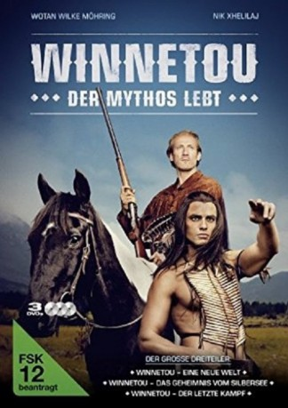

#5191 Winnetou - Der Mythos lebt 3 - Der letzte Kampf
 
 IMDB-Wertung: 0.0 / 10
IMDB-Wertung: 0.0 / 10  Metascore: 0
Metascore: 0 
Old Shatterhand ist endlich angekommen im Leben. Mit dem Häuptling der Apachen, Winnetou, hat er einen Freund und Blutsbruder an seiner Seite. In dessen Schwester Nscho-tschi hat er die Liebe seines Lebens gefunden. Nachdem der deutsche Abenteurer im Wilden Westen schon große Kämpfe überstanden hat, steht seine Waffe mittlerweile unbenutzt im Schrank. Es ist an der Zeit sich niederzulassen. Gemeinsam mit Nscho-tschi baut Old Shatterhand eine Farm. Ganz in der Nähe des Dorfs der Apachen wollen die beiden eine kleine Familie gründen.
Jahr: 2016
Dauer: 123 Minuten
FSK:
Land: Deutschland Studio: RTLTonspuren:
Untertitel:
Auflösung: 1080p (1920x808) Größe: 5877 MB
Genre: Western
Regisseur: Philipp Stölzl
Drehbuch: Joseph Staten
Soundtrack:
Darsteller:
 Mario Adorf als Frederick Louis Santer
Mario Adorf als Frederick Louis Santer Predrag Bjelac als Tangua
Predrag Bjelac als Tangua- Sebastian Cavazza als Tokvi-Kava
- Danira Govich als Frau Tadeusz
- Henny Reents als Belle
 Emilio Sakraya als Neke Bah
Emilio Sakraya als Neke Bah- Zeljko Sestic als Pole Czeslaw
 Wotan Wilke Möhring als Old Shatterhand
Wotan Wilke Möhring als Old Shatterhand Gustav-Peter Wöhler als Richter
Gustav-Peter Wöhler als Richter Nik Xhelilaj als Winnetou
Nik Xhelilaj als Winnetou- Frank Behrent als Geschworener
- Ivan Gallardo als Häuptling der Navajo
- Brandon Garrett als Pole Tadeusz
- Iazua Larios als Nscho-tschi
- Roni Lepej als Scharfrichter
 Michael Maertens als Frederick Louis Santer Jr
Michael Maertens als Frederick Louis Santer Jr- Hans Peter Müller als Sheriff Dubrowski
- Ivan Ozegovic als Pole Zbigniew
- Ralf Pappers als Bürger in Roswell
 Milan Peschel als Sam Hawkens
Milan Peschel als Sam Hawkens- Andreas Schumann als Drucker
- Christian Skibinski als Siedler
- Raphael Souza Sá als Häuptling der Crow
- Anamarija Vrdoljak als Frau Zbigniew
- Ines Wurth als Frau Czeslaw
- Martin Zander als Cowboy
Datei: X:\HD-Western-Collections\Winnetou - Der Mythos lebt\Winnetou - Der Mythos lebt 3 - Der letzte Kampf (2016, FSK, 1920x808).mkv seit 28.12.2016
Festplatte: HD Eastern+Western
 Alle Filme aus Gruppe 'HD-Western-Collections\Winnetou - Der Mythos lebt'
Alle Filme aus Gruppe 'HD-Western-Collections\Winnetou - Der Mythos lebt'